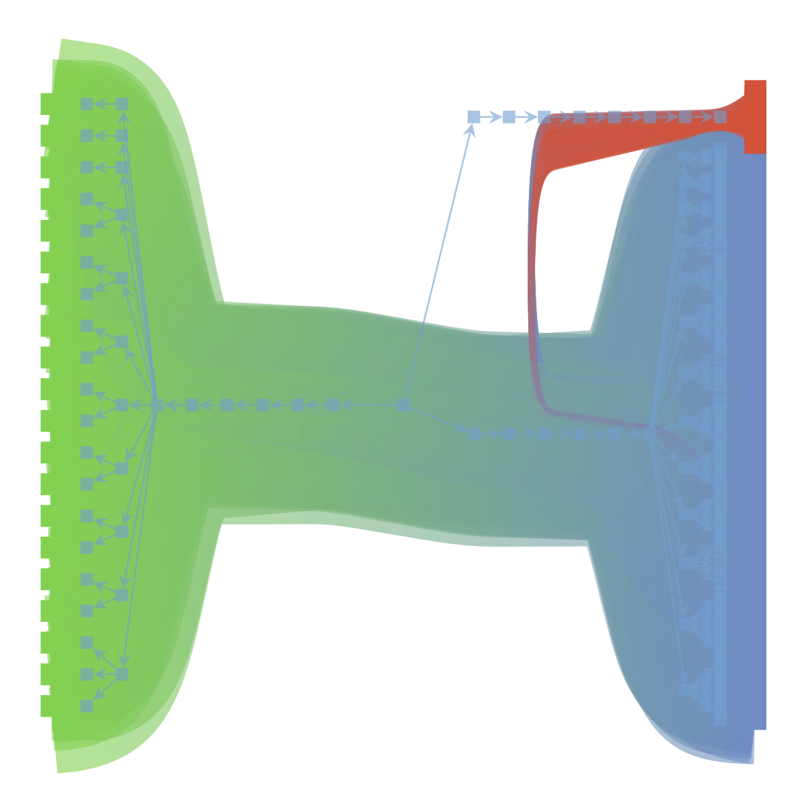

Welcome to trisbm’s documentation!¶
This module inherits from sbmtm and extends network based topic models with multiple layers of information.
{kind=link}
trisbm module¶
install: conda install trisbm -c conda-forge
triSBM¶
triSBM
Copyright(C) 2021 fvalle1
This program is free software: you can redistribute it and / or modify it under the terms of the GNU General Public License as published by the Free Software Foundation, either version 3 of the License, or (at your option) any later version.
This program is distributed in the hope that it will be useful, but WITHOUT ANY WARRANTY without even the implied warranty of MERCHANTABILITY or FITNESS FOR A PARTICULAR PURPOSE. See the GNU General Public License for more details.
You should have received a copy of the GNU General Public License along with this program. If not, see < http: // www.gnu.org/licenses/>.
-
class
trisbm.trisbm.trisbm[source]¶ Class to run trisbm
-
_get_shape()[source]¶ - Returns
list of tuples (number of documents, number of words, (number of keywords,…))
-
clusters(l=0, n=10)¶ Get n ‘most common’ documents from each document cluster. most common refers to largest contribution in group membership vector. For the non-overlapping case, each document belongs to one and only one group with prob 1.
-
clusters_query(doc_index, l=0)¶ Get all documents in the same group as the query-document. Note: Works only for non-overlapping model. For overlapping case, we need something else.
-
draw(*args, **kwargs) → None[source]¶ Draw the network
- Parameters
*args – positional arguments to pass to self.state.draw
**kwargs – keyword argument to pass to self.state.draw
-
dump_model(filename='trisbm.pkl')[source]¶ Dump model using pickle
To restore the model:
import cloudpickle as pickle file=open(“trisbm.pkl” ,”rb”) model = pickle.load(file)
file.close()
-
fit(n_init=5, verbose=True, deg_corr=True, overlap=False, parallel=True, *args, **kwargs) → None[source]¶ Fit using minimize_nested_blockmodel_dl
- Parameters
n_init – number of initialisation. The best will be kept
verbose – Print output
deg_corr – use deg corrected model
overlap – use overlapping model
parallel – perform parallel moves
*args – positional arguments to pass to gt.minimize_nested_blockmodel_dl
**kwargs – keywords arguments to pass to gt.minimize_nested_blockmodel_dl
-
get_D()¶ return number of doc-nodes == number of documents
-
get_N()¶ return number of edges == tokens
-
get_V()¶ return number of word-nodes == types
-
group_membership(l=0)¶ - Return the group-membership vectors for
document-nodes, p_td_d, array with shape Bd x D
word-nodes, p_tw_w, array with shape Bw x V
It gives the probability of a nodes belonging to one of the groups.
-
group_to_group_mixture(l=0, norm=True)¶
-
load_graph(filename='graph.xml.gz') → None[source]¶ Load a presaved graph
- Parameters
filename – graph to load
-
load_model(filename='topsbm.pkl')¶
-
make_graph(df: pandas.core.frame.DataFrame, get_kind) → None[source]¶ Create a graph from a pandas DataFrame
- Parameters
df – DataFrame with words on index and texts on columns. Actually this is a BoW.
get_kind – function that returns 1 or 2 given an element of df.index. [1 for words 2 for keywords]
-
make_graph_from_BoW_df(df, counts=True, n_min=None)¶ Load a graph from a Bag of Words DataFrame
- Parameters
should be a DataFrame with where df.index is a list of words and df.columns a list of documents (df) –
arguments (optional) –
counts (-) –
n_min (-) –
int (filter all word-nodes with less than n_min counts (default None)) –
:param : :type : type df: DataFrame
-
make_graph_multiple_df(df: pandas.core.frame.DataFrame, df_keyword_list: list) → None[source]¶ Create a graph from two dataframes one with words, others with keywords or other layers of information
- Parameters
df – DataFrame with words on index and texts on columns
df_keyword_list – list of DataFrames with keywords on index and texts on columns
-
metadata(l=0, n=10, kind=2)[source]¶ get the n most common keywords for each keyword-group in level l.
- Returns
tuples (keyword,P(kw|tk))
-
multiflip_mcmc_sweep(n_steps=1000, beta=inf, niter=10, verbose=True)¶ Fit the sbm to the word-document network. Use multtiplip_mcmc_sweep - n_steps, int (default:1): number of steps.
-
plot(filename=None, nedges=1000)¶ Plot the graph and group structure. optional: - filename, str; where to save the plot. if None, will not be saved - nedges, int; subsample to plot (faster, less memory)
-
plot_topic_dist(l)¶
-
pmi_td_tw(l=0)¶ Point-wise mutual information between topic-groups and doc-groups, S(td,tw) This is an array of shape Bd x Bw.
It corresponds to S(td,tw) = log P(tw | td) / ilde{P}(tw | td) .
This is the log-ratio between P(tw | td) == prb of topic tw in doc-group td;
ilde{P}(tw | td) = P(tw) expected prob of topic tw in doc-group td under random null model.
-
print_summary(tofile=True)¶ Print hierarchy summary
-
print_topics(l=0, format='csv', path_save='')[source]¶ Print topics, topic-distributions, and document clusters for a given level in the hierarchy.
- Parameters
l – level to store
format – csv (default) or html
path_save – path/to/store/file
-
save_data()¶
-
save_graph(filename='graph.xml.gz') → None[source]¶ Save the graph
- Parameters
filename – name of the graph stored
-
topicdist(doc_index, l=0)¶
-
topics(l=0, n=10)¶ get the n most common words for each word-group in level l. return tuples (word,P(w|tw))
-
Licence¶
This work is in part based on sbmtm and it is released under the terms of the GNU General Public License available along with this program or at <https://www.gnu.org/licenses/>